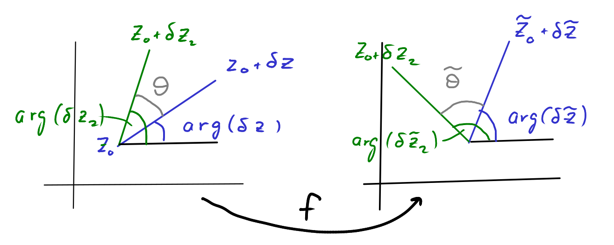

15 Why airplanes fly
Our calculation of the lift on the rotating cylinder in the previous section was very specific to the particular example. In this section we will see that, by using complex analysis techniques, we can get an expression for the lift force that works more generally. The result turns out to be independent of the details of the flow and only involves the flow velocity far from the aerofoil and the circulation around the aerofoil.
You will not be examined on the material in this section. But I hope that it shows you a nice example of how powerful advanced mathematics (complex analysis in this case) can be when brought to bear on an applied problem (the lift on an airplane wing in this case).
You find content related to this lecture in the textbooks:
- Acheson (1990) sections 4.6 to 4.11
- Batchelor (2000) section 6.6
- Paterson (1983) sections 16.5 and chapter 17
15.1 Blasius theorem
Theorem 15.1 (Blasius theorem) The force \(\underline{F}\) per unit length on an aerofoil in an incompressible, irrotational flow described by a complex potential \(w(z)\) is given by \[ F_x - i F_y = i\frac{\rho}{2}\oint_C\left(\frac{dw}{dz}\right)^2 dz, \tag{15.1}\] where \(C\) is any contour encircling the aerofoil.
In this subsection we will derive this expression. For this purpose we first consider the force \(d\underline{F}\) on an infinitesimal segment of length \(dl\) of the cross section of the aerofoil. In terms of the angle \(\theta\) that is indicated in Figure 15.1 we have \[ dF_x = p\cos\theta\,dl,~~~dF_x = -p\sin\theta\,dl, \] and thus \[ dF_x - i\, dF_y = p\,(\cos\theta + i\sin\theta)\,dl = p\,e^{i\theta} dl. \tag{15.2}\] Notice how by reinterpreting the \(x\)-\(y\) plane as the complex plane we can avoid having to deal with sines and cosines.
The flow is tangential to the aerofoil, so the velocity components are \[ u_x=|u|\sin\theta,~~~u_y=|u|\cos\theta. \tag{15.3}\] We can relate that to the derivative of the complex potential, \[ \frac{dw}{dz} = u_x-i u_y =|u|\left(\sin\theta-i\cos\theta\right)=-i|u|e^{i\theta}, \tag{15.4}\] and thus \[ |u|=ie^{-i\theta}\frac{dw}{dz}. \tag{15.5}\] This makes it easy to calculate \[ u^2=-e^{-2i\theta}\left(\frac{dw}{dz}\right)^2. \tag{15.6}\] We can use this in Bernoulli’s theorem for irrotational flow (in the absence of body forces) to find the pressure \[ p =-\frac{\rho}{2}u^2+constant=\frac{\rho}{2}e^{-2i\theta}\left(\frac{dw}{dz}\right)^2+constant. \tag{15.7}\] The value of the constant is irrelevant because only pressure differences create forces. Substituting this expression \[\begin{split} dF_x-i\,dF_y&=p(\cos\theta+i\sin\theta)dl =p e^{i\theta}\,dl\\ &= \frac{\rho}{2}\left(\frac{dw}{dz}\right)^2e^{-i\theta}dl = \frac{\rho}{2}\left(\frac{dw}{dz}\right)^2(\cos\theta\,dl -i\sin\theta\,dl)\\ &=i\,\frac{\rho}{2}\left(\frac{dw}{dz}\right)^2dz. \end{split} \tag{15.8}\] where we used that \[ dx=-\sin\theta\,dl,~~dy=-\cos\theta\,dl~\text{ and }~dz=dx+i\,dy. \tag{15.9}\] We can now integrate this along the aerofoil to get the total force on the aerofoil as \[ F_x-iF_y=i\,\frac{\rho}{2}\oint_C\left(\frac{dw}{dz}\right)^2dz. \tag{15.10}\] Because we are integrating a holomorphic function, the result will be the same no matter which contour \(C\) we are using, as long as it encircles the aerofoil once in a counterclockwise direction. We have thus derived Blasius’ theorem.
15.2 Kutta-Joukowski lift theorem
We now simplify the expression for the force acting on an aerofoil that we derived in the previous subsection even further by considering the Laurent expansion \[ \frac{dw}{dz}=a_0+\frac{a_1}{z}+\frac{a_2}{z^2}+\cdots. \tag{15.11}\] (You can find a discussion of Laurent expansions in your lecture notes from ‘Functions of a complex argument’.) We know that the velocity far away from the aerofoil (which we will denote as \(\underline{u}(\infty)\)) has to be finite, and therefore the Laurent expansion of \(dw/dz\) can not have any terms with positive powers of \(z\). Far away from the aerofoil we have \[ \lim_{|z|\to\infty}\frac{dw}{dz}= a_0=u_x(\infty)-i\,u_y(\infty). \tag{15.12}\] We also get the Laurent expansion \[ \left(\frac{dw}{dz}\right)^2dz=a_0^2+\frac{2a_0a_1}{z}+\frac{a_1^2+2a_0a_2}{z^2}+\dots. \tag{15.13}\] Using this in Blasius theorem and using Cauchy’s residue theorem gives us \[ F_x-iF_y=i\,\frac{\rho}{2}\oint_C\left(\frac{dw}{dz}\right)^2dz=-2\pi\rho\, a_0\,a_1. \tag{15.14}\] We get \(a_1\) from the contour integral of \(dw/dz\): \[\begin{split} 2\pi i a_1&=\oint_C\frac{dw}{dz}dz=\oint_C(u_x-i\,u_y)(dx+i\,dy)\\ &=\oint(u_xdx+u_ydy)+\oint_C(iu_xdy-iu_ydx)\\ &=\oint_C\underline{u}\cdot d\underline{x}+i\oint_C\underline{\nabla}\psi\cdot d\underline{x}. \end{split} \tag{15.15}\] The second term vanishes. To see this consider integrating along the aerofoil. Because the flow follows the surface of the aerofoil, this means that that surface is a streamline. Thus the streamfunction \(\psi\) is constant along the contour, hence \(\underline{\nabla}\psi\cdot d\underline{x}=0\). The remaining first term is just the circulation \(\Gamma\). Hence we have that \[ a_1=\frac{\Gamma}{2\pi i}. \tag{15.16}\] Substituting our results for \(a_0\) and \(a_1\) into Eq. 15.14 gives \[ F_x-iF_y=i\rho(u_x(\infty)-i u_y(\infty))\Gamma, \tag{15.17}\] from which we can extract the real and imaginary parts to get our final result: \[ F_x=\rho\,\Gamma u_y(\infty),~~~F_y=-\rho\,\Gamma u_x(\infty). \tag{15.18}\] As promised, the forces depend only on the circulation and the velocity far away from the aerofoil.
Let us check that this reproduces the results from Section 14.3 on the Magnus effect. There we had \(u_y(\infty)=0\) and thus \(F_x=0\). Thus there is no drag force. (In the real world of course there is drag, which will be created by the turbulent wake behind the cylinder, but we are not modelling that.) We also had \(u_x(\infty)=a\) and \(\Gamma=-2\pi b\) so that \(F_y=2\pi\rho a b\), which reproduces the old result in Eq. 14.19 .
15.3 Conformal mappings
From the previous lecture we have a flow around a cylindrical aerofoil. We want the flow around a less symmetrical shape that is rounded at the front but has a tip at the end. This is illustrated in Figure 15.2. We are going to use a conformal mapping that maps from one to the other.
Let \(A\) be the cross section of a cylindrical aerofoil, i.e., a closed disc, with radius \(R\), centred at \(z=-\lambda\). Let \(\tilde{A}\) be the desired cross section of the aerofoil. Then \(D=\mathbb{C}\setminus A\) and \(\tilde{D}=\mathbb{C}\setminus \tilde{A}\) are the regions outside the aerofoils.
Let \(f:D\to\tilde{D}\) be a holomorphic invertible function. View this as a map from the region in one complex plane to another, which we will refer to as the \(z\) plane and the \(\tilde{z}\) plane respectively, where \(\tilde{z}=f(z)=\tilde{x}+i\tilde{y}\). We want to know what happens to the fluid flow under this map. We introduce the complex potential on \(\tilde{D}\) to be everywhere identical to the complex potential at the corresponding point in \(D\), i.e., \[ \tilde{w}(\tilde{z})=w(z)=w(f^{-1}(\tilde{z})). \tag{15.19}\] This is a holomorphic function on \(\tilde{D}\). It gives us the vector potential \(\tilde{\phi}\) and the stream function \(\tilde{\psi}\) on \(\tilde{D}\) as usual: \[ \tilde{w}(\tilde{z})=\tilde{\phi}(\tilde{x},\tilde{y})+i\tilde{\psi}(\tilde{x},\tilde{y}). \tag{15.20}\] Because the stream function \(\tilde{\psi}(\tilde{z})\) on \(\tilde{D}\) takes the same values as the original stream function \(\psi\) on the corresponding point on \(D\), the stream lines on \(D\) get mapped by \(f\) to streamlines on \(\tilde{D}\). We can find the mapped velocity field on \(\tilde{D}\) from the complex potential \(\tilde{w}\) as \[ \frac{d\tilde{w}}{d\tilde{z}}=\tilde{u}_x-i\tilde{u}_y=\frac{d}{d\tilde{z}}w\left(f^{-1}(\tilde{z})\right)=\frac{dw}{dz}\frac{df^{-1}(\tilde{z})}{d\tilde{z}} =\frac{dw/dz}{f'}, \tag{15.21}\] where we used that the derivative of the inverse function \(f^{-1}\) is the reciprocal of the derivative of the function \(f\). Thus we find that the components of the velocity field are simply rescaled by \(f'\) at every point.
We now consider how angles behave under the mapping \(f\). See Figure 15.3 for a drawing illustrating the following discussion. We consider an infinitesimal line from some point \(z_0\) to point \(z_0+\delta z\) for some infinitesimally small \(\delta z\). This gets mapped into a line from \(\tilde{z}_0=f(z_0)\) to \[\begin{split} \tilde{z}_0+\delta\tilde{z}&=f(z_0+\delta z)\\ &=f(z_0)+\delta z\,f'(z_0)+\frac{(\delta z)^2}{2}f''(z_0)+\\ &\qquad\cdots +\frac{(\delta z)^n}{n!}f^{(n)}(z_0)+\cdots \end{split} \tag{15.22}\] In the case where \(f^{(n)}(z_0)=0\) for all \(n<m\) and \(f^{(m)}(z_0)\neq 0\) this gives \[ \delta\tilde{z}=f(z_0+\delta z)=\frac{(\delta z)^m}{m!}f^{(m)}(z_0)+\text{ higher-order terms}. \tag{15.23}\] The higher-order terms can be neglected for infinitesimal \(\delta z\). For the angle that the line segments make with the horizontal we find \[ \operatorname{arg}(\delta \tilde{z})=m\,\operatorname{arg}(\delta z) + \operatorname{arg}(f^{(m)}(z_0)). \tag{15.24}\]

Let us now consider a second infinitesimal line element from \(z_0\) to \(z_0+\delta z_2\), which gets mapped into a line from \(\tilde{z}_0\) to \(\tilde{z}_0+\delta\tilde{z}_2\) and consider the angle \[ \theta = \operatorname{arg}(\delta z_2) - \operatorname{arg}(\delta z) \tag{15.25}\] between them. This gets mapped to \[ \tilde{\theta} = \operatorname{arg}(\delta \tilde{z}_2) - \operatorname{arg}(\delta \tilde{z}) =m\,\operatorname{arg}(\delta z_2) - m\,\operatorname{arg}(\delta z)=m\,\theta. \tag{15.26}\] Thus the angle is multiplied by the integer \(m\). But \(f'(z)\neq 0\) for all \(z\) in \(D\) because otherwise \(f\) would not be invertible. Hence \(m=1\) and all angles are preserved. This is why such mappings by holomorphic invertible functions are called conformal mappings.
15.4 Joukouwski mapping
We want the aerofoil to have a cusp at the trailing edge, see Figure Figure 15.2. We will see soon why that is important. At the cusp the angle between the upper and lower surfaces of the aerofoil is \(2\pi\). In the original cylindrical aerofoil the angle is everywhere equal to \(\pi\). So we need to choose a conformal map \(f\) that, when extended to the surface of the aerofoil, has a vanishing derivative at the point \(c=R-\lambda\) but a non-vanishing second derivative, \[ f'(c)=0~~~\text{ and }~~~f''(c)\neq 0, \tag{15.27}\] because then, according to Eq. 15.26 , the angles at \(z=c\) are doubled.
We also want the conformal mapping to not affect the flow far away from the aerofoil. We know from Eq. 15.21 that the velocity is scaled by a factor of \(f'\), so we need \[ \lim_{|z|\to\infty}f'(z)=1. \tag{15.28}\]
A function \(f\) that satisfies the conditions in Eq. 15.27 and Eq. 15.28 is \[ f(z)=z-\frac{c^2}{z}. \tag{15.29}\] It is holomorphic on \(D\) because the poles at \(z=\pm c\) are not in \(D\). The point \(z=-c\) lies inside the aerofoil and the point \(z=c\) on its surface.
We now start with the flow around the cylinder discussed in the section on the Magnus effect, described by the complex potential \[ w(z)=a\left(z+\frac{R^2}{z}\right)+ib\log z. \tag{15.30}\] We rotate everything by an angle \(\alpha\) counterclockwise and shift the centre of the cylinder to the left by \(\lambda\) . This is achieved by replacing \(z\) by \((z+\lambda)e^{-i\alpha}\). We also make the argument of the logarithm dimensionless by dividing by \(R\), see discussion in section Section 14.4. This thus gives the flow on the left in Figure 15.4.
We set \(b=-\Gamma/(2\pi R)\). So we use \[ w(z)=a\left((z+\lambda)e^{-i\alpha}+\frac{R^2}{z+\lambda}e^{i\alpha}\right)-\frac{i\Gamma}{2\pi R}\log\frac{z+\lambda}{R}. \tag{15.31}\] From the derivative of this complex potential \[ \frac{dw}{dz}=a\left(e^{-i\alpha}-\dfrac{R^2}{(z+\lambda)^2}e^{i\alpha}\right)-\dfrac{i\Gamma}{2\pi}\dfrac{1}{z+\lambda} \tag{15.32}\] we see that far away we have constant flow at an angle \(\alpha\) to the horizontal: \[ \lim_{|z|\to\infty}\frac{dw}{dz}=a\,e^{-i\alpha}=a\cos\alpha-ia\sin\alpha=u_x(\infty)-iu_y(\infty). \tag{15.33}\] By calculating the contour integral along a contour surrounding the aerofoil using Cauchy’s residue theorem we find that the circulation is \[ \oint_C\frac{dw}{dz}dz=2\pi i\left(-\dfrac{i\Gamma}{2\pi}\right)=\Gamma. \tag{15.34}\]
We can now use Eq. 15.21 to find the velocity field after applying the conformal mapping \(f\): \[ \frac{d\tilde{w}}{d\tilde{z}}=\frac{dw/dz}{f'} =\frac{a\left(e^{-i\alpha}-\dfrac{R^2}{(z+\lambda)^2}e^{i\alpha}\right)-\dfrac{i\Gamma}{2\pi}\dfrac{1}{z+\lambda}} {1-\dfrac{(R-\lambda)^2}{z^2}}. \tag{15.35}\] We note that due to the zero of the denominator at \(z=R-\lambda\) the velocity is infinite at that point unless the numerator vanishes at that point, i.e., unless \[ \Gamma = -4\pi a R\sin\alpha. \tag{15.36}\] The cusp at the rear of the aerofoil forces the airflow to have this particular amount of circulation.
We can therefore now use the Kutta-Joukowski theorem to determine the lift force: \[\begin{split} F_x&=\rho\Gamma u_y(\infty)=4\pi\rho \,a^2\, R\sin\alpha(-\sin\alpha),\\ F_y&=-\rho\Gamma u_y(\infty)=4\pi\rho \,a^2\, R\sin\alpha(\cos\alpha). \end{split} \tag{15.37}\]
We used the fact that the mapping did not change the velocity far away and did not change the circulation because \(\tilde{w}(\tilde{z})=w(z)\) and thus \[ \oint_C \frac{d\tilde{w}}{d\tilde{z}}d\tilde{z}=\oint_{f^{-1}(C)}\frac{dw}{dz}dz=\Gamma, \tag{15.38}\] due to the fact that the contour \(f^{-1}(C)\) also surrounds the cylinder in the counterclockwise direction.
We have thus found that the lift force is acting at an angle \(\alpha\) to the vertical and has a magnitude of \[ 4\pi\rho \,a^2\, R\sin\alpha. \tag{15.39}\]